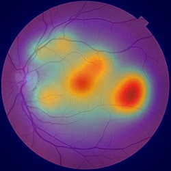

Explainable AI (XAI)
Autonomous Screening
Diabetic Retinopathy Clinical Saliency Report
Screening Reference: 7d606773-5ecb-4964-9aad-cc9c51cad234 | Timestamp: 2026-09-05 02:04:18
Severe NPDR
Confidence: 60.0%
PATIENT & EXAM SPECIFICATION
Patient Identifier:PATIENT_1043
Examined Eye:OD
Referable DR:Yes (Referral Required)
Clinical Urgency:Urgent Retinal Specialist (2-4 weeks)
IMAGE QUALITY AUDIT
Overall Quality:Gradable (Optimal for AI) (91.1/100)
Clarity / Sharpness:100.0/100
Uniform Illumination:78.7/100
Optic Disc Visibility:Visible
Multi-Modal Computer Vision Diagnostics

1. Original Fundus

2. Ben Graham CLAHE

3. Grad-CAM Saliency

4. Vessels & Landmarks
Explainable AI (XAI) Saliency & Attention Analysis
ANATOMICAL QUADRANT ATTRIBUTION
| Quadrant | Attention | Visual Distribution |
|---|---|---|
| Macula Fovea | 32.6% | |
| Superior Temporal | 15.4% | |
| Inferior Temporal | 19.9% | |
| Superior Nasal | 18.2% | |
| Inferior Nasal | 13.9% |
Primary Activation Focus: Macula Fovea
LESION SALIENCY AUDIT
| Biomarker Signature | AI Detection Rationale |
|---|---|
| Microaneurysms | Detected punctate focal points |
| Hemorrhages | Dot/blot retinal hemorrhages visible in periphery |
| Hard Exudates | Lipid deposits identified near vascular arcades |
| Cotton Wool Spots | Nerve fiber layer infarcts suspected |
| Neovascularization | Negative |
Attribution Model: Gradient-weighted Class Activation Mapping (Grad-CAM) (EfficientNet-B0.features.top_conv)
Clinical AI Screening Disclaimer: This system is an AI-assisted screening tool and does not replace professional ophthalmic examination and clinical diagnosis.
This algorithmic evaluation is provided as an ophthalmological decision support tool. It does not replace comprehensive dilated clinical examination by a licensed eye care specialist.
This algorithmic evaluation is provided as an ophthalmological decision support tool. It does not replace comprehensive dilated clinical examination by a licensed eye care specialist.